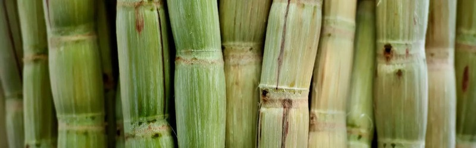
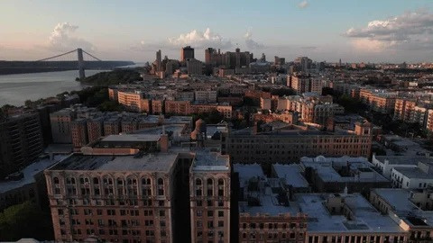
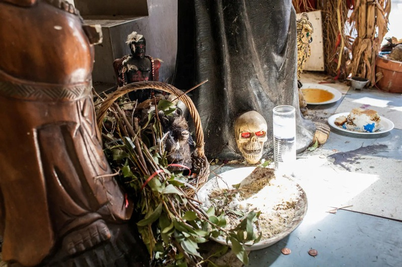
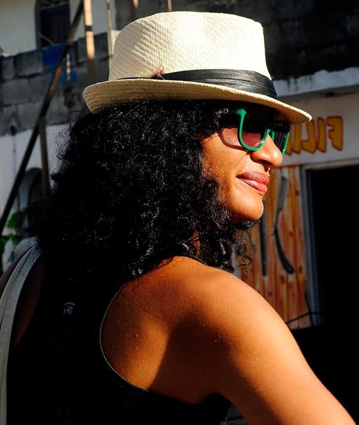
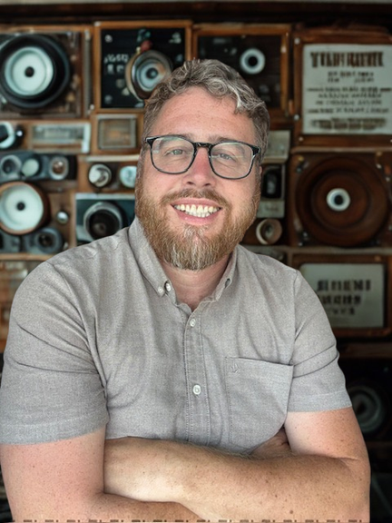

Sidd
A restless truth-seeker who abandons wealth and tradition, only to spend his life trying to control love, power, spirituality, and destiny.

A Dominican Crime Drama & Spiritual Odyssey
One man’s search for truth carries him from inheritance to ritual, from the streets to the sea.
The Story
With the transcendental searching of Siddhartha and the raw energy of late-1980s Washington Heights, Sidd follows a Dominican truth-seeker from privilege to power—and beyond.
Sidd rejects the cigar empire his father built for him and enters the hidden world of Los Misterios. Still restless, he leaves spiritual discipline for New York’s Dominican street crews, where money, influence, and desire promise a different kind of transcendence.
After tragedy destroys the life he has built, Sidd escapes to the Mona Passage. As a humble ferryman between the Dominican Republic and Puerto Rico, he confronts the final truth he spent a lifetime avoiding: life cannot be controlled, only lived.



The Characters
A restless truth-seeker who abandons wealth and tradition, only to spend his life trying to control love, power, spirituality, and destiny.
Sidd’s loyal childhood friend, whose devotion within the Los Misterios tradition becomes the quiet mirror to Sidd’s searching.
A magnetic poet in Washington Heights whose freedom awakens Sidd to love, impermanence, and the danger of possession.
A charismatic trafficker who introduces Sidd to money, status, and street power—and believes survival is the only truth.
Sidd’s teenage son, carrying the same restless hunger that once drove his father to abandon everything.
A revered spiritual leader who teaches that wisdom comes through surrender to forces greater than oneself.
Rooted in Community

Director
Dominican writer, director, and producer Leticia Tonos is an internationally recognized voice in Caribbean cinema. Her emotionally rich films explore identity, spirituality, migration, race, and the complexities of Caribbean life with intimacy and global resonance.
Her work is defined by a commitment to stories rooted in Caribbean truth, human vulnerability, and spiritual complexity—bridging local specificity with universal emotional power.
Written By

Screenwriter and producer whose credits include The Hill, The Forever Tree, and Battlecreek.
Dominican-American writer, producer, and actor raised between the Bronx and Washington Heights.
Stephen and Francisco first met in Washington Heights in 2004. Sidd is their first collaboration, born from a shared passion for Dominican history, bold characters, and unforgettable stories.
Explore the Slate
Next Project40 Minutes of Hell →